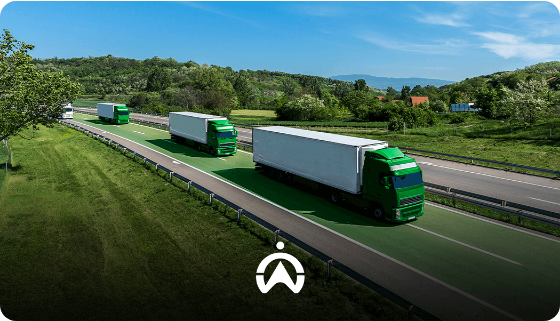

Cliente
FTSLog, un’azienda di logistica su strada che desidera ridurre i propri costi operativi ed il proprio impatto ambientale.
Chi siamo
Project Manager / Scrum Master
Coordinamento generale e roadmap.
Data cleaning
Pulizia e normalizzazione dati.
Analisi dati
Analisi Power BI.
Sviluppo Web
Architettura UI e interfaccia utente.
Database
Creazione DataBase e caricamento dati.
Contesto strategico
Visione d'InsiemeFTSLog, un’azienda di logistica su strada che desidera ridurre i propri costi operativi ed il proprio impatto ambientale.
Semplificare le analisi, ottimizzare i flussi di trasporto ed abilitare decisioni guidate dai dati in tempo reale.
Deliverable
Applicazione web responsive realizzata per la consultazione interattiva dei dati di flotta.
Grafici dinamici e moduli di calcolo delle emissioni di CO₂ e consumi energetici.
Report di progetto completo con specifiche tecniche, metodologia e linee guida d'uso.
Conclusione & Roadmap
Riconciliazione immediata tra dati logistici e indicatori d'impatto ecologico.
Piattaforma modulare predisposta per l'integrazione di nuove sorgenti dati e flotte aziendali.
